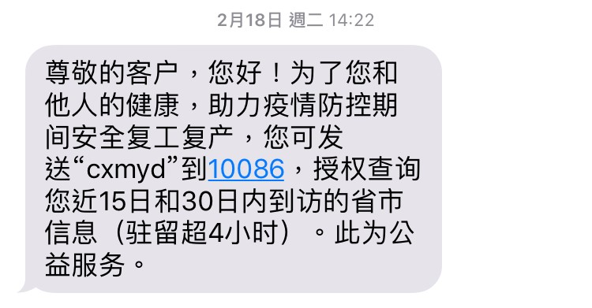
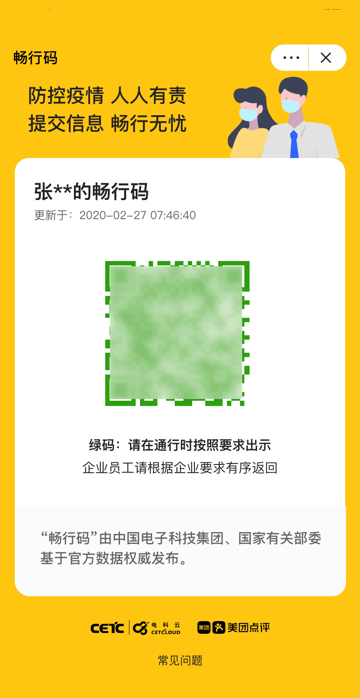

从移动支付到线上电商，中国居民越来越习惯把自己的日常生活交给科技。“科技兴国”也成为近些年最流行的说法之一，有海外留学生甚至吐槽国外生活网购、移动支付多么不方便，和中国相比是多么落后。
如果你此刻因疫情，活动被限制，就更能感受到互联网科技救命般的存在：外卖app成为了口罩一样的生活必需品，吃穿用度都离不开一个个小区团购群。这些科技极大地方便了人们的日常生活，也催生了新的经济增长点。
然而科技带来的问题，随着疫情的爆发，也愈加凸显。
文/叉奶鱼
用个人信息换取出行许可
在中国生活，用个人信息换取使用公共服务的权利已经成为大部分人的习惯：手机卡和火车票都是实名制，迁徙到其它城市需要办理居住登记，微信群聊要绑定信用卡 ……而疫情的到来，拓宽了这种交换的广度和深度。
为了精准定位潜在感染者和密切接触者，包括上海和深圳等城市，都开始实行地铁实名制，只有实名验证通过的乘客，才能搭乘地铁。
同样的实名制也计划在电影院实施，根据北京市电影局联合北京市疾病预防控制中心发布《新冠肺炎流行期间北京市电影行业复工防疫指引（1.0版）》 “售票处应建立观众信息登记制度（姓名、性别、住址、身份证号、联系电话、观影影片及放映时间、影厅号和座位号）”

二月中旬开始，中国三大电信运营商给用户发送短信称，可以为他们提供过去15日和30日内途径城市（停留超过4小时）的信息，只要回复相关代码即可查询。这项服务看似“自愿”甚至带有“便民”的性质，有多个城市的火车站、甚至社区不管个人实际情况，要求乘客或住户必须出示这些信息，确认未到过疫情严重的地区（如湖北）才可以进站/社区。要知道，运营商利用手机漫游服务来掌握用户过往途径城市，这项服务并不保准百分百准确，网上也屡屡见到“被漫游“到自己没去过的地方的抱怨。

同时，微信、支付宝还有央企中国电子科技都分别推出各种“码”，用颜色区分安全等级。支付宝的“健康码”二月中上线，通过自主申报个人信息与市政府后台数据校验比对，生成三色码：
“健康码”在杭州推出后已经有五千万人使用，如果没有绿码，出行会大受限制。但有网民投诉信息不透明，不知道自己领到黄码和红码。纽约时报更报道，一旦用户授权APP访问个人数据，会有一个名为“向警察报告信息和地点”的程序会把用户位置和识别编码发送伺服器。
上周，央企中国电子科技集团也推出“畅行码”，交通、铁路、民航等数据由国家直接提供，据称能精准定位乘客飞机或火车的“前三排、后三排”。“畅行码”在美团APP上线，并在海南，湖南，新疆等地使用。

用疫情把监控“合理化
如果说以个人信息交换公共服务，还能算是某种“自愿“行为，那人脸识别这种无处不在的科技则从来不会在乎个体的意见。
早从去年开始，包括北京大学、北京第二外国语学院在内的高校都在学校门口放置了人脸识别设备，该校注册的师生经过刷脸才能进入校园。
在疫情蔓延下，一些小区也开始使用人像识别和红外线自动测温设备。 最近更要求住户提供个人照片和身份证信息， 说是为以后建立的人脸识别系统作准备，住户以后可以自助刷脸进入小区，无需再检查身份证。目前小区还没安装系统，但可以预测这措施会在不久将来实施。
也因此有不少人忧虑，政府是在利用疫情更“合理“地推进一系列监控，掌握公民的行踪，压缩自由的边界。
疫情之下，是以“公共安全”为名的从出行到娱乐的全面信息掌控。这些措施的必要性与有效性在实施前并未得到讨论，在实施后也不容置疑。公民是否可以以侵犯隐私为由拒绝提供信息？收集的信息将被谁所用？在疫情结束后是否会停止？
这些问题目前还没有答案。
*本文由合作撰稿人提供，如果您愿意成为我们的撰稿人，与我们共同创作面向中文读者的人权评论、人权百科和适应中文语境的人权报道，请与[email protected]联系，来信请在标题处注明“撰稿”并附上个人简介及作品。
<br />
<img src=”/remote.axd/amnestysgprdasset.blob.core.windows.net/media/12466/brand_film_website_image.jpg?preset=fixed_1472_42″ alt=”” class=”responsive__img”><br />